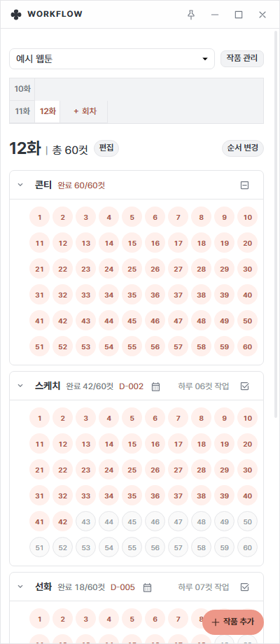
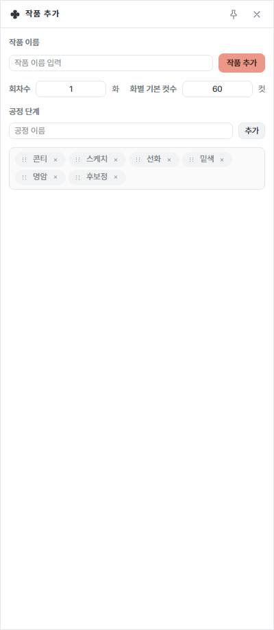
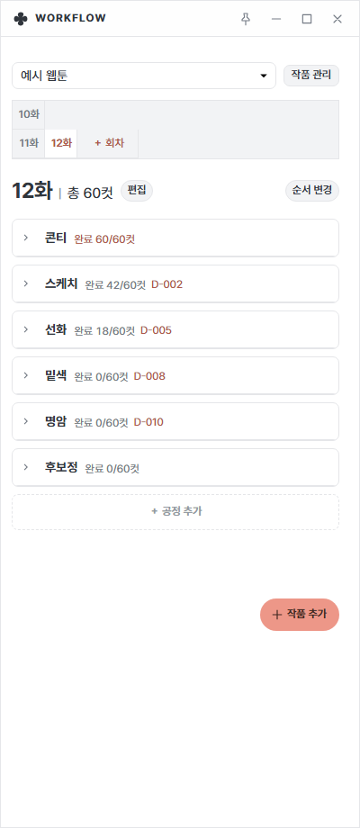
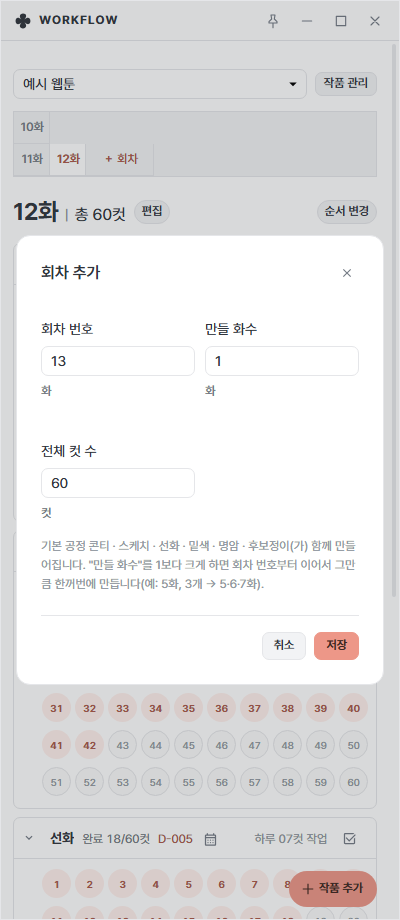
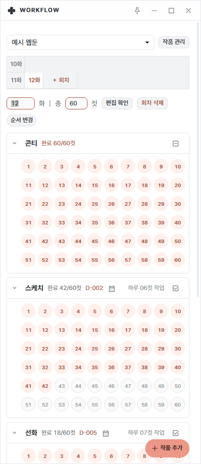
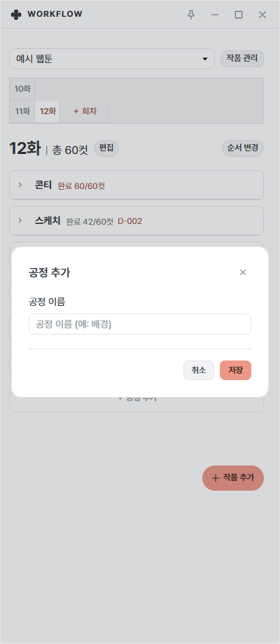
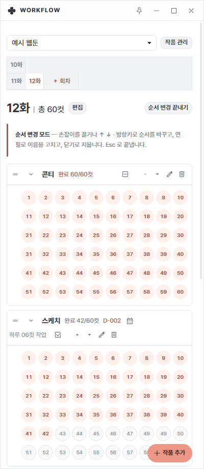
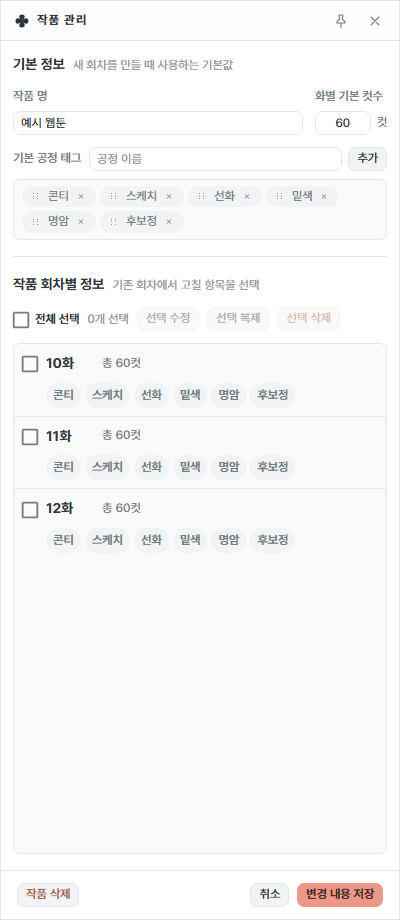

워크플로우 사용법
웹툰 한 화가 지금 어느 공정에서 몇 컷까지 왔는지, 컷 번호를 눌러 기록합니다.
1. 구조 이해하기
작품 → 회차 → 공정 → 컷 순서로 나뉩니다.
- 작품: 연재 중인 웹툰 한 편. 위쪽 목록에서 작품을 바꿉니다.
- 회차: 10화, 11화처럼 화별 탭으로 나뉩니다.
- 공정: 콘티·스케치·선화·밑색·명암·후보정 같은 작업 단계입니다. 회차마다 따로 있습니다.
- 컷: 공정 안의 번호 버튼입니다. 끝낸 컷을 누르면 색이 칠해집니다.
퍼센트나 자동 판단 없이, 내가 누른 만큼만 보여 주는 단순한 체크판입니다.

2. 작품 만들기
워크플로우 창 오른쪽 아래의 + 작품 추가 버튼을 누르면 옆에 작품 추가 창이 열립니다.
- 작품 이름을 적습니다.
- 회차수와 화별 기본 컷수를 정합니다. 처음 60컷으로 시작해도 나중에 회차별로 고칠 수 있습니다.
- 공정 단계를 정합니다. 기본은 콘티·스케치·선화·밑색·명암·후보정이며, 이름을 적고 추가를 누르면 늘어납니다. ⠿ 손잡이로 순서를 바꾸고 ✕로 뺍니다.
- 위의 작품 추가 버튼을 누르면 작품이 만들어집니다.
공정은 하나 이상 있어야 하고, 작품 이름이 비어 있으면 만들 수 없습니다.

3. 컷 체크하기
한 공정에서 컷을 끝낼 때마다 번호를 눌러 칠합니다. 한 번에 여러 컷을 칠하는 방법도 있습니다.
| 방법 | 동작 |
|---|---|
| 클릭 | 컷 하나를 완료로 칠하거나, 다시 눌러 지웁니다. |
| 끌기 | 컷을 누른 채 지나가면 여러 컷이 한 번에 칠해집니다. 처음 누른 컷의 반대 상태(칠하기 ↔ 지우기)로 바뀝니다. |
| Shift + 클릭 | 직전에 누른 컷부터 지금 컷까지를 한 번에 칠합니다. |
| ← → 방향키 | 컷 사이를 옮겨 다닙니다. Shift와 함께 누르면 지나가는 컷이 칠해집니다. |
| 터치 길게 누르기 | 터치 화면에서는 컷을 길게 누른 뒤 끌면 여러 컷이 칠해집니다. |
| 전체 버튼 | 공정 줄 오른쪽 상자 아이콘. 그 공정의 컷을 모두 완료로 바꿉니다. 모두 끝난 공정에서는 같은 자리가 ‘완료를 모두 해제’로 바뀝니다. |
공정 이름 옆에는 완료 42/60컷처럼 계산된 숫자가 보입니다. 숫자는 눌러서 고치는 값이 아니라 표시용입니다.
4. 마감일과 하루 작업량
마감일은 공정마다 따로 정합니다. 스케치는 이번 주, 채색은 다음 주처럼 공정별로 다를 수 있기 때문입니다.
- 공정 이름 줄의 달력 아이콘을 누르고 날짜를 고릅니다. 고르면 바로 저장됩니다. Esc를 누르거나 밖을 누르면 그대로 닫힙니다.
- 공정 이름 옆에 D-002처럼 남은 날이 보입니다. 마감이 지났다면 D+003 지남으로 바뀝니다.
- 남은 컷이 있고 마감 전이면 오른쪽에 하루 06컷 작업이 나옵니다. 남은 컷을 (남은 날 + 오늘)로 나눠 올림한 값입니다.
예시: 스케치가 42/60컷이고 마감이 이틀 뒤라면 남은 18컷 ÷ 3일 = 하루 6컷입니다.
5. 공정 접기·펼치기
공정 이름 왼쪽 화살표를 누르면 컷 격자가 접히고 한 줄만 남습니다. 접힌 줄에는 완료 42/60컷과 마감이 남은 공정의 D-day가 함께 보입니다.
이미 끝낸 공정은 접어 두고, 지금 하는 공정만 펼쳐 두면 작은 창에서도 한눈에 볼 수 있습니다.

6. 회차 다루기
회차 추가
회차 탭 끝의 ＋ 회차를 누르면 대화상자가 열립니다.
- 회차 번호: 시작할 화 번호입니다. 이미 있는 번호는 만들 수 없습니다.
- 만들 화수: 1보다 크게 하면 그 번호부터 이어서 한꺼번에 만듭니다. 예) 5화에서 3개 → 5·6·7화.
- 전체 컷 수: 이번에 만드는 화의 컷 수입니다.
작품의 기본 공정이 함께 만들어집니다.

회차 편집·삭제
회차 제목 옆의 편집을 누르면 화 번호와 총 컷수를 바로 고칠 수 있는 입력칸이 나옵니다. 편집 확인으로 저장하고, 회차 삭제로 그 화를 지웁니다.
회차를 삭제하면 그 화의 공정과 완료 기록이 함께 사라집니다. 지우기 전에 확인 창이 나옵니다.
회차가 20개를 넘으면 탭이 20화 단위 구간으로 나뉘고, 화살표로 이전·다음 구간을 넘깁니다.

7. 공정 추가·순서·이름·삭제
공정 추가
공정 목록 맨 아래 점선의 + 공정 추가를 누르고 이름(예: 배경)을 적어 저장합니다. 그 회차에만 추가됩니다.

순서 변경 모드
평소에는 화면을 깔끔하게 두고, 오른쪽 위의 순서 변경을 눌렀을 때만 편집 도구가 나타납니다.
- 왼쪽 손잡이를 끌어 순서를 바꿉니다. ↑ ↓ 화살표나 방향키로도 한 칸씩 옮깁니다.
- 연필로 공정 이름을 고칩니다.
- 휴지통으로 공정을 지웁니다. 완료한 컷 기록도 함께 사라지며, 지우기 전에 확인 창이 나옵니다.
- 끝내려면 순서 변경 끝내기를 누르거나 Esc를 누릅니다.

8. 작품 관리
작품 목록 옆의 작품 관리를 누르면 옆에 관리 창이 열립니다.
- 기본 정보: 작품 이름, 화별 기본 컷수, 기본 공정 태그. 앞으로 새 회차를 만들 때의 기본값입니다.
- 작품 회차별 정보: 회차를 체크해 선택 수정(컷수·공정 일괄 변경), 선택 복제, 선택 삭제를 합니다. 체크한 항목만 바뀝니다.
- 변경 내용 저장: 눌러야 실제로 적용됩니다. 저장 전에는 삭제 예정으로 표시된 회차를 되돌릴 수 있습니다.
- 작품 삭제: 작품과 모든 회차·공정·완료 컷이 사라지며 되돌릴 수 없습니다.
컷수를 줄이거나 공정을 빼면 초과한 컷·해당 공정의 체크와 마감 기록이 지워집니다. 저장 직전에 무엇이 지워지는지 확인 창으로 알려 줍니다.

활용 예시
- 작품과 공정을 만들고 첫 회차를 마련합니다.
- 화마다 공정별 마감을 달력 아이콘으로 정합니다. 하루 작업량이 표시되니 그날 할 컷 수를 바로 알 수 있습니다.
- 작업이 끝난 컷을 눌러 칠하고, 끝낸 공정은 접어 둡니다.
- 일정에 맞춰 다음 화를 ＋ 회차로 만듭니다.